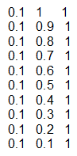

|
|
|


载荷谱
所有条目（频率、功率、速度）可以定义为系数或值。如果使用系数输入这些值，则功率和速度以名义功率的系数形式输入。在计算中，力和扭矩使用扭矩因子（载荷因子/速度因子）。如果输入设置为值，则不能更改参考齿轮、扭矩、速度或功率。这些输入字段处于非活动状态。
你可以从文件中导入载荷谱或直接输入它们。如果你直接输入此数据，载荷工况的数量由你输入的行数决定。
- 输入： 指定这些因子是用于功率还是扭矩。如果从文件导入载荷谱，此设置同样适用。
- 链接文件： 该选项在载荷谱设置为“Own input”时显示。如果该选项显示，则可以从选定文件导入载荷谱值。导入可以以两种方式执行：如果未设置标志，则可以修改导入的载荷谱值。如果设置了标志，则载荷谱值将被选定文件中的值自动覆盖，且不能修改。
- 自定义输入载荷谱： 可以直接输入载荷谱，或从文件中导入。
- 文件名： 点击 按钮，通过目录选择文件。包含载荷谱的文件必须是文本文件（.dat）。用户将在“dat”目录中找到一个名为“Example_DutyCycle.dat”的样本载荷谱文件。用户应将自己定义的载荷谱存储在“EXT/dat”目录中，以确保在版本升级后仍能始终可用。

用于输入载荷谱的示例文件
- 频率： H0 ... H19，这些频率之和必须为 1。
- 载荷因子（扭矩因子）： P0 ... P19 0<Pn<,∞.
- 速度因子： N0 ... N19, 0<Nn<∞.
带有负扭矩的载荷区间被解释为从驱动状态转换为被驱动状态。
Load spectra
All entries (frequency, power, speed) can be defined either as coefficients or as values. If coefficients are used to input these values, the power and speeds are entered as coefficients of the nominal power. In the calculations, the factor for torque (load factor/speed factor) is used for forces and torques. You cannot change the reference gear, torque, speed or power if the input is set to values. These input fields are inactive.
You can either import load spectra from a file or enter them directly. If you input this data directly, the number of load cases is defined by the number of lines you enter.
- Input: Specify whether the factors are for power or torque. This also applies if the load spectrum is imported from a file.
- Link with file: This option is displayed if the load spectrum is set to "Own input". If the option is displayed, load spectrum values can be imported from a selected file. The import can be performed in two ways: If the flag is not set, the imported load spectrum values can be modified. If the flag is set, the load spectrum values are automatically overwritten by the values in the selected file, and cannot be modified.
- Own input of load spectra: You can input the load spectrum directly, or import it from a file.
- File name: Click the button to select a file via the directories. The file containing the load spectrum must be a text file (.dat). You will find a sample load spectrum file called "Example_DutyCycle.dat" in the "dat" directory. You should store load spectra you define yourself in the "EXT/dat" directory, to ensure they are always available even after a version upgrade.
Example of a file used to input a load spectrum
- Frequency: H0 ... H19, the sum of these frequencies must be 1.
- Load factor (torque factor): P0 ... P19 0<Pn<,∞.
- Speed factor: N0 ... N19, 0<Nn<∞.
Load bins with negative torque are interpreted as a change from driving to driven.